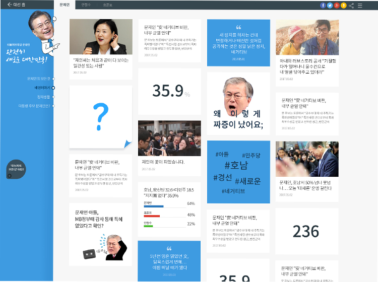

CHOICE 2017


Project Features
해외 트렌드 벤치마킹LA Times 내 2016 미국 대통령선거 특집을 벤치마킹하여 후보자의 SNS 정보를 제공하는 서비스를 기획
SNS 기반 연성 콘텐츠기존 정치 기사의 포멀 형식에서 벗어나 후보자의 정보를 이해하기 쉬운 SNS 홍보 게시물을 활용하여 제공
인터렉티브 디자인마이크로 인터렉티브 디자인을 적극적으로 활용하여 생동감이 느껴지도록 화면을 구성하고 시각적 강조 효과와 재미를 더함
카드 형식 맞춤형 뉴스다양한 타입의 카드 형식을 사용하여 맞춤형 뉴스를 제공하고 원본 게시물과의 연결성을 유지
후보자 스토리텔링각 후보자마다 4가지 스토리텔링 메뉴를 구성하여 메뉴의 서사구조를 따라가는 UX를 제공

Responsive Web다양한 디바이스 대응 및 UX의 통일성을 유지하기 위하여 반응형 웹사이트로 설계